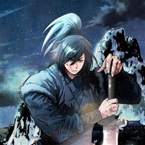
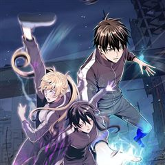
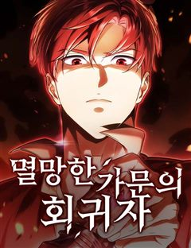

대사형 선유 같은 웹툰 추천

대사형 선유 · 노경찬 / 박창환
대사형 선유 재밌게 봤다면 이 웹툰들도 좋아할 거예요. 같은 장르이면서 눈물샘자극, 가족 같은 요소가 겹치는 작품을, 겹치는 요소가 많은 순서로 20개 골랐어요.
2026-10-08 기준 · 네이버웹툰·카카오웹툰·레진코믹스 · 성인 작품 제외
내 취향으로 직접 골라 추천받기 →-
1
 네이버웹툰
네이버웹툰할배무사와 지존 손녀
죽을 날을 앞두고 미련없이 생을 마무리 하려던 순간 덮친 멸문지화! 유진산은 홀로 생존한 갓난 손녀 '유설'이 다 자랄 때까지만이라도 살아남기로 결심한다. 이미 늙어버린 몸으로 육아와 수련을 병행하며 눈물겨운 사투를 벌이는 동안, 어느새 무림지존의…
가족액션무협네이버웹툰에서 보기 → -
2
 카카오웹툰
카카오웹툰은해상단 막내아들
『은해상단 막내아들』 천하제일의 상재(商才)를 타고난 은서호. “어째서 무림맹이 나를…….” “맹의 윗분들께서 자네가 거슬린다고 하더군. 쯧, 그놈의 돈이 뭐라고.” 백도 무림을 자처하던 무림맹의 칼에 살해당한 나는 상단 일을 처음 배우던 날로 돌아…
눈물샘자극액션무협카카오웹툰에서 보기 → -
3
 카카오웹툰
카카오웹툰쌍갑포차
예상치 못한 시간, 예상치 못한 장소에 나타나는 쌍갑포차! 쌍갑포차를 운영하는 월주는 과연 누구일까? 쌍갑포차에 찾아오는 다양한 손님들의 감동적인 이야기! 한국 전통 신화 이승과 저승을, 꿈의 세계 그승과 함께 재창조한 세계관으로, 덤덤하게 써 내려…
눈물샘자극무협카카오웹툰에서 보기 → · 쌍갑포차 같은 웹툰 → -
4
 네이버웹툰
네이버웹툰김부장
“제발 안경 쓴 아저씨는 건들지 말자…” 오직 자신의 딸 '민지'를 위해 특수요원직을 관두고 평범함을 선택한 가장 김부장. 그러던 어느 날 민지가 소리소문 없이 사라지고, 김부장은 자신을 감시하는 국가를 적으로 돌리면서까지 딸을 찾아나서기 시작하는데…
가족액션네이버웹툰에서 보기 → · 김부장 같은 웹툰 → -
5
 네이버웹툰
네이버웹툰입학용병
어린 시절 비행기 추락 사고의 유일한 생존자 유이진. 살아남기 위해 용병으로 살아가던 유이진은 10년 후, 가족이 있는 고향으로 돌아왔다.
가족액션네이버웹툰에서 보기 → · 입학용병 같은 웹툰 → -
6
 카카오웹툰
카카오웹툰화타가 된 외과의사
정의로운 성격 때문에 전문의는커녕 목숨까지 잃은 일반외과 전공 3년차 한진수. 천사인가, 악마인가, 아님 알 수 없는 시스템인가. 평소 쌓은 선행 덕분에 부활의 기회를 얻게 된다. 산적 떼에게 죽은 몸으로 부활하게 된 한진수. 그런데 이 몸이 전설의…
눈물샘자극액션카카오웹툰에서 보기 → · 화타가 된 외과의사 같은 웹툰 → -
7
 네이버웹툰
네이버웹툰백XX
정보사(HID) 요원 '백이수'와 범죄 조직의 보스인 쌍둥이 형 '백도경'. 같은 얼굴 다른 삶을 살아온 쌍둥이 형제. 조직에 배신당한 동생은 자신의 신분을 버리고 형이 되기로 한다. 정보사요원, 범죄 조직의 보스가 되다...!
가족액션네이버웹툰에서 보기 → · 백XX 같은 웹툰 → -
8
 네이버웹툰
네이버웹툰소년교도소
조폭인 아버지를 식물인간으로 만들어 소년교도소에 수감된 ‘차주영’. 얼마 뒤, 깨어나지 못할 거라 여겼던 아버지가 찾아와 말한다. “아들아, 내가 너의 소꿉친구를 죽였다” 그런 아버지에게 복수할 방법은 단 하나 ‘이 교도소를 장악하는 것’
가족액션네이버웹툰에서 보기 → -
9
 네이버웹툰
네이버웹툰환생했더니 단종의 보모나인
조선의 비극적 왕 단종 곁으로 환생한 여인, 뜻밖에 그의 보모가 되어버린다. 역사의 비극을 바꿀 기회 앞에서 그녀는 어린 군주를 지키기 위해 권력의 소용돌이에 맞서게 되는데…
가족무협네이버웹툰에서 보기 → -
10
 카카오웹툰
카카오웹툰룬의 아이들
소년이여, 반드시 살아남아라! 삼촌에게 가문이 멸망당한 후 소년 보리스에게 남은 것은 가문의 검 “윈터러” 뿐이었다. 하지만 그 보물이 또 다른 위기의 원인이 될 줄이야. 사람들이 “윈터러”를 노릴 때 마다 보리스의 마음은 점점 더 겨울처럼 차갑고…
눈물샘자극액션카카오웹툰에서 보기 → -
11

카카오웹툰암천제
세상으로부터 버림받은 아이. 어둠으로 던져진 아이. 사람의 살이 찢기고 비명이 난무하는 곳에서 밥을 먹고 잠을 자던 아이. 어느 날, 산 자는 나갈 수 없는 제왕성 비옥십팔호실에서 소악귀가 사라지고, 힘이 없어 모든 걸 잃어야 했던 소악귀가 암천의…
눈물샘자극액션카카오웹툰에서 보기 → -
12
 카카오웹툰
카카오웹툰조선야설
"너만 미친개냐, 나도 필동 책 골목의 무심이야!"_조선 최고 야설작가 '무심' "그렇게 원한다면 살아남은 자가 왕이 되어야지."_비운의 대군 '명' *** "뭐, 기대하시오. 이 거봉대사 무심이, 인생 대작 나올 듯 싶으이." 경덕 책방의 홍일점…
눈물샘자극무협카카오웹툰에서 보기 → -
13

카카오웹툰전신의 강림
봉인되었던 신화와 전설이 다시 현실로 돌아왔다. 모든 신(神)과 용(龍)이 해방되고, 마(魔)와 귀(鬼)가 다시 들어온 세계. 인간의 각성. 영웅의 등장. 새로운 신화시대가 열렸다. 이 이야기는 새로운 신화시대를 살아가는 이 시대 영웅들의 전쟁과 사…
눈물샘자극액션카카오웹툰에서 보기 → -
14
 네이버웹툰
네이버웹툰그아비에 그아들
"이게 다 아빠 때문이야!!" 2026년. 아빠를 닮아 159cm에 51kg의 왜소한 체격의 소유자 '강권' 매일같이 학교에서 괴롭힘을 당하다 옥상에서 떨어진다 1996년 아빠의 베프인 188cm 70kg의 '최강권' 삼촌의 몸으로 깨어난 강권 하지…
가족액션네이버웹툰에서 보기 → -
15
 카카오웹툰
카카오웹툰타람 타람 타람
나긋나긋한 움직임으로 들어온 다온이 연회장 중앙에서 멈춰 섰다. 인형만큼이나 무미하고 감정 없는 얼굴이었다. 그럼에도 도도하고 우아해서 얼음 여왕처럼 강렬한 인상을 주었다. 엑서는 다리를 꼬며 낮게 웃었다. “지배자로서, 오늘 밤 널 안겠다.” 운명…
눈물샘자극무협카카오웹툰에서 보기 → -
16

네이버웹툰멸망한 가문의 회귀자
후회로만 가득한 생. 스스로의 잘못을 깨닫고 다시 사람이 되고자 했을 때, 이미 가문은 불타 사라진 뒤였다. 발악 같은 분노로 하루하루 연명하던 삶. 그 절망의 끝에서, 간절한 염원이 하늘에 닿았다. 용서받지 못한 자. 운명을 거슬러 검을 들다.
가족액션네이버웹툰에서 보기 → -
17

-
18
 카카오웹툰
카카오웹툰처음이라 몰랐던 것들
위대한 시계 장인들의 딸이며 영웅, 빅토르 함장의 아내인 스칼렛 덤펠트. 그녀는 경찰청에서 취조를 받던 중, 빅토르의 왕실 복귀를 반대하는 자들에 의해 기억을 잃게 된다. "나가실 때쯤에는, 여기서 있었던 일을 기억하지 못하실 겁니다.” 사라진 일주…
눈물샘자극무협카카오웹툰에서 보기 → -
19
 카카오웹툰
카카오웹툰프린세스
3대에 걸친 대서사시. 라미라,아나토리아,스가르드 3국의 이야기. 1년 내내 온화한 기후와 풍족한 자원을 가졌지만 약소국이기에, 언제나 정치적으로 중립을 지켜야 하는 라미라. 라미라의 왕자인 비욘, 그가 사랑하고 있는 상대인 유모의 딸 비이, 그리고…
눈물샘자극무협카카오웹툰에서 보기 → -
20
 카카오웹툰
카카오웹툰교룡의 주인
심장에 여의주를 품은 왕이 용과 함께 다스리는 곳, 예락. 그리고 세자에게 자신의 심장을 바쳐야 하는 왕족, ‘마니’. 이번 대의 ‘마니’ 유리서란은 맹약식 날 자신의 교룡에게 세 번의 명령만 내리고 자유를 주겠다는 약속을 한다. 그럼에도 다들 그녀…
눈물샘자극무협카카오웹툰에서 보기 →